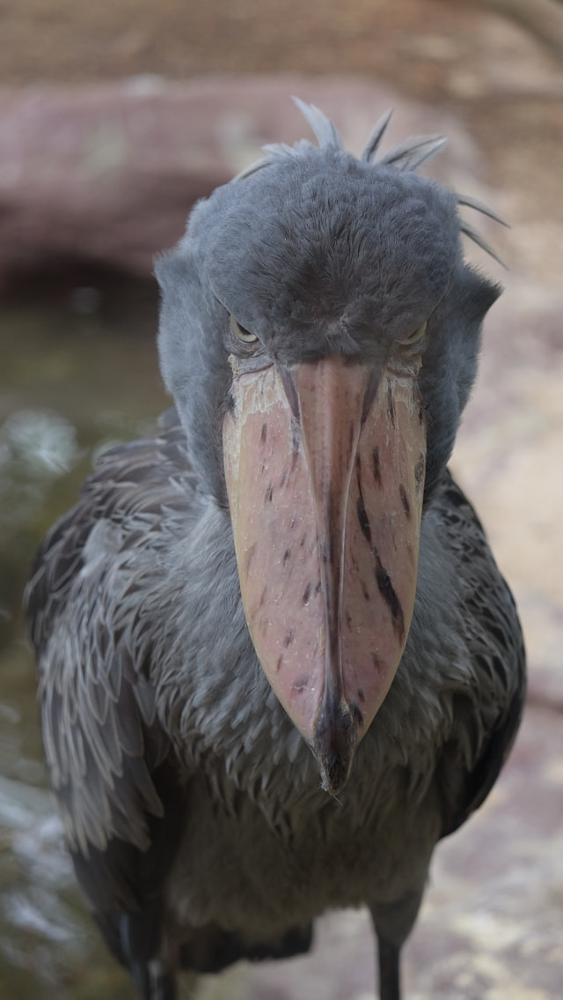

Shoebill Stork

Shoebills are large, prehistoric-looking birds which haunt
freshwater marshes and swamps in East Africa, thus fondly referred
to by many as the “king of the marshes”.
Shoebills are large,
prehistoric-looking birds which haunt freshwater marshes and swamps
in East Africa, thus fondly referred to by many as the “king of the
marshes”.